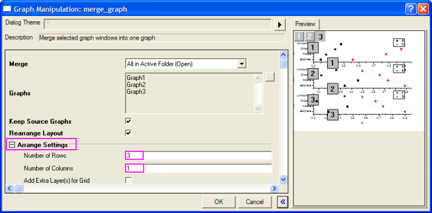

Streudiagramm für mehrere Datensätze
MultiDataDot-Chart
Zusammenfassung
Das Streudiagramm ist ein statistisches Diagramm, das aus Datenpunkten besteht, die auf einer einfachen Skala gezeichnet sind. Es wird häufig als Ersatz für das Kreisdiagramm verwendet, weil es den Vergleich von Mengen vereinfachen kann. Dieses Tutorial erläutert, wie Sie ein Streudiagramm für mehrere Datensätze erstellen.
Origin-Version mind. erforderlich: Origin 2015 SR0
Was Sie lernen werden
Dieses Tutorial zeigt Ihnen, wie Sie:
-
- ein einfaches Punktdiagramm erstellen,
- X-Y-Achse austauschen
- die Layerverwaltung verwenden,
- Achsen benutzerdefiniert anpassen,
- Objekte zum Diagramm hinzufügen.
Schritte
Die folgenden Daten bezüglich des Elementgehalts der verschiedenen Bereiche zu unterschiedlichen Zeiten können verwendet werden, um ein Streudiagramm mit mehreren Datensätzen zu erstellen:
-
| Sulfate |
0,346 |
0,560 |
0,333 |
0,887 |
0,310 |
0,899 |
| Nitrate |
0,382 |
0,780 |
0,456 |
0,732 |
0,456 |
0,732 |
| Chloride |
0,441 |
0,880 |
0,120 |
0,656 |
0,221 |
0,673 |
| Ammonium |
0,481 |
0,900 |
0,256 |
0,890 |
0,434 |
0,825 |
- Erstellen Sie eine neue Arbeitsmappe über die Schaltfläche Neue Arbeitsmappe auf der Symbolleiste Standard und geben Sie die Daten ein.
- Fahren Sie mit dem Cursor über die erste Zelle von Spalte col(B), bis er sich in einen nach unten weisenden Pfeil verwandelt. Sie können Spalte col(B) durch Klicken mit der linken Maustaste und Ziehen markieren. Wählen Sie Zeichnen: Einfache 2D: Punktdiagramm im Hauptmenü, um ein Diagramm zu erstellen, und wählen Sie Grafik: X-Y-Achse vertauschen. Alternativ lassen sich Punktdiagramme über die entsprechende Schaltfläche auf der Symbolleiste 2D-Grafiken erstellen.
- Wiederholen Sie Schritt 2 zweimal, um zwei weitere Diagramme mit den Spalten col(D) und col(E) sowie col(F) und col(G) zu erstellen.
- Um drei Diagramme zusammenzufügen, wählen Sie Grafik: Grafikfenster zusammenfügen: Dialog öffnen. Erweitern Sie den Zweig Einstellungen Anordnung, setzen Sie die Anzahl der Zeilen auf 3 und Anzahl der Spalten auf 1. Das Vorschaufenster rechts zeigt, wie die drei Diagramme angeordnet werden und auf welchen Layern sie sich befinden. Klicken Sie auf die Schaltfläche OK, um zu speichern. Ein neues Diagramm wird erstellt, das drei Layer mit jeweils einem separatem Diagramm enthält.
- 
- Um das Diagramm "aufzuräumen", löschen Sie die Legenden und Achsentitel in den Diagrammen, indem Sie sie markieren und die Taste Entfernen drücken.
- Wählen Sie Grafik: Layer-Verwaltung im Hauptmenü. Wählen Sie Layer 2 auf der linken Seite. Setzen Sie im rechten Bedienfeld auf der Registerkarte Verknüpfung die Option Verknüpfung mit auf 1. Damit wird die Y-Achse des zweiten Layers, der das zweite Diagramm enthält, mit dem ersten Layer, dass das erste Diagramm enthält, verknüpft. Setzen Sie die Verbindung der Y-Achsen auf Gerade (1 zu 1). Dies stellt sicher, dass die Achse für die zwei Diagramme die gleiche ist. Klicken Sie auf die Schaltfläche Anwenden. Aktivieren Sie das Kontrollkästchen Das Ziehen zur Neupositionierung, positioniert auch den Hauptlayer neu. Diese Einstellung stellt sicher, dass, wen eine Achse verschoben wird, die anderen Achsen entsprechend folgen.
- Markieren Sie Layer 3 auf der linken Seite und wiederholen Sie den vorherigen Schritt. Klicken Sie auf die Schaltfläche OK, um Änderungen zu speichern.
- Um die X- und Y-Achse zurückzusetzen, stellen Sie sicher, dass Layer 1 der aktive Layer ist, indem Sie auf die 1 oben links im Diagramm klicken. Klicken Sie doppelt auf die horizontale Achse des Diagrammlayers. Legen Sie auf der Seite Skalierung bei ausgewähltem Symbol Horizontal die unten gezeigten Werte fest (da die Layerachsen im letzten Schritt verknüpft wurden, werden diese Änderungen auf alle drei Achsen angewendet):
- Gehen Sie zur Seite Linie und Hilfsstriche, klicken Sie auf das Symbol Oben im linken Bedienfeld und aktivieren Sie Linie und Hilfsstriche zeigen, um die obere Y-Achse zu zeigen. Setzen Sie die Großen Hilfsstriche auf Außen und die Kleinen Hilfsstriche auf Keine.

- Wählen Sie das Symbol Unten im linken Bedienfeld und setzen Sie auf der Seite Linie und Hilfsstriche die Großen Hilfsstriche und Kleinen Hilfsstriche auf Kein, um die Hilfsstriche zu entfernen.
- Gehen Sie zur Seite Beschriftung der Hilfsstriche im rechten Bedienfeld, wählen Sie das Symbol Oben im linken Bedienfeld und aktivieren Sie das Kontrollkästchen Zeigen.
- Gehen Sie zur Seite Spezielle Hilfsstriche, wählen Sie das Symbol Oben im linken Bedienfeld und wählen Sie die Option Verstecken für Achsenanfang und Achsenende.
- Gehen Sie zur Seite Beschriftung der Hilfsstriche, wählen Sie das Symbol Oben im linken Bedienfeld und aktivieren Sie das Kontrollkästchen Zeigen.
- Gehen Sie zur Seite Beschriftung der Hilfsstriche, wählen Sie das Symbol Unten im linken Bedienfeld und aktivieren Sie das Kontrollkästchen Zeigen.
- Gehen Sie zur die Seite Linie und Hilfsstriche, wählen Sie das Symbol Links und aktivieren Sie Gleiche Optionen für Links und Rechts verwenden. Setzen Sie die großen Hilfsstriche und kleinen Hilfsstriche auf Kein:
- Gehen Sie zur Seite Gitternetze und wählen Sie Horizontal im linken Bedienfeld, aktivieren Sie das Kontrollkästchen Zeigen im Zweig Hauptgitternetzlinien.
- Klicken Sie auf OK, um die Einstellungen anzuwenden und den Dialog Achsen zu schließen. Das Diagramm sollte jetzt folgendermaßen aussehen.
- Klicken Sie mit der rechten Maustaste auf Layer 1 und wählen Sie Format kopieren: Alle Stilformate. Klicken Sie mit der rechten Maustaste auf das Diagramm und wählen Sie Format einfügen, um den Stil von Layer 1 auf die gesamte Seite zu übertragen.

- Klicken Sie doppelt auf die obere Achse in Layer 2. Setzen Sie bei ausgewähltem Symbol Oben im linken Bedienfeld auf der Seite der Linie und Hilfsstriche die Großen Hilfsstriche und Kleinen Hilfsstriche auf Kein. Tun Sie das Gleiche für die obere Achse von Layer 3.
- Gehen Sie im Dialog Achsen von Layer 3 zur Seite Linie und Hilfsstriche, wählen Sie das Symbol Unten im linken Bedienfeld und setzen Sie die Großen Hilfsstriche und Kleinen Hilfsstriche auf Außen.
- Gehen Sie zur Seite Beschriftung der Hilfsstriche, wählen Sie das Symbol Unten im linken Bedienfeld und aktivieren Sie das Kontrollkästchen Zeigen.
- Gehen Sie zur Seite Spezielle Hilfsstriche, wählen Sie das Symbol Unten im linken Bedienfeld und wählen Sie die Option Verstecken für Achsenanfang und Achsenende. Klicken Sie auf OK.
- Das Diagramm sollte folgendermaßen aussehen:
- Klicken Sie doppelt auf das Diagramm, um den Dialog Details Zeichnung zu öffnen. Ändern Sie die Einstellungen, wie unten zu sehen: Das Festlegen von Modus Bearbeiten auf Unabhängig stellt sicher, dass die Symbole separat für jeden Datensatz auf einem Layer benutzerdefiniert angepasst werden können. Deaktivieren Sie für Symbolform das Kontrollkästchen Benutzerdefinierte Konstruktion und klicken Sie auf den nach unten weisenden Pfeil, um die verschiedenen Symbolformen auszuwählen. Für die Symbolfarbe klicken Sie auf der Registerkarte Symbol auf die Option Symbolfarbe und wählen Sie Individuell, um eine Farbe für alle Symbole in diesem Tutorial festzulegen:
- Wiederholen Sie den vorhergehenden Schritt (Schritt 24) für Layer 2 und Layer 3. Klicken Sie auf OK, und das Diagramm wird folgendermaßen angezeigt:

- Wählen Sie auf der Symbolleiste Hilfsmittel, um drei Rechtecke auf die Diagramme zu zeichnen. Für jedes Rechteck:
- Klicken Sie doppelt auf das Rechteck, um den Dialog Objekteigenschaften zu öffnen.
- Legen Sie auf der Registerkarte Füllung die gewünschte Füllfarbe fest, die die Farbe des Rechtecks zuweist:
- Passen Sie auf der Registerkarte Dimensionen die Größe und Position des Rechtecks an:
- Aktivieren Sie das Hilfsmittel Text
 auf der Symbolleiste Hilfsmittel und klicken Sie in die Rechtecke, um die gewünschten Texte einzufügen.
auf der Symbolleiste Hilfsmittel und klicken Sie in die Rechtecke, um die gewünschten Texte einzufügen.
- Um eine Legende für die Symbole zu erstellen, wählen Grafik: Legende: Datenzeichnungen im Hauptmenü. Verschieben Sie die Legende in eine geeignete Position, klicken Sie mit der rechten Maustaste auf sie und wählen Sie Einstellungen. Ändern Sie die Einstellungen, wie unten zu sehen:
- Aktivieren Sie die obere X-Achse von Layer 1, um sie in eine geeignete Position zu verschieben.
Das Punktdiagramm mit mehreren Datensätzen sollte am Ende folgendermaßen aussehen: